画面の見方
左側でブロックを組み立てると、右側に正規表現と、対象テキストに使った結果が表示されます。
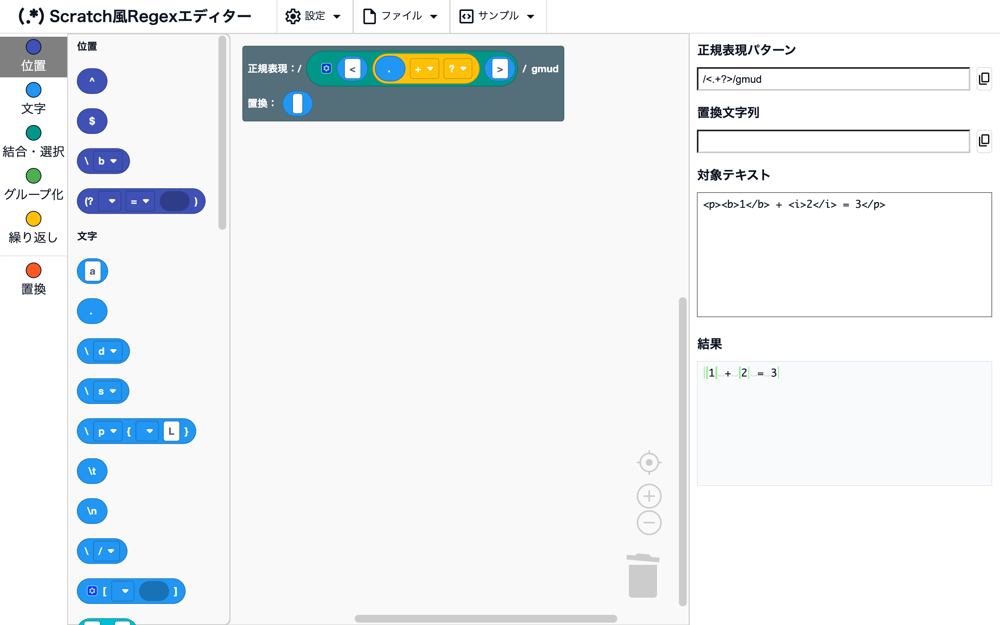
ワークスペースとツールボックス
場所画面の左側
左端のツールボックスからブロックをドラッグして、ワークスペースに置きます。 ワークスペースには最初からルートのブロックがあり、そこにつないだブロックから正規表現が作られます。 ツールボックスのカテゴリ名をクリックすると、そのカテゴリのブロックまで移動します。
正規表現パターン・置換文字列・対象テキスト・結果
場所画面の右側
- 正規表現パターン：組み立てた正規表現が
/パターン/フラグの形で表示されます - 置換文字列：ルートの置換の欄につないだブロックから作られた置換文字列が表示されます
- 対象テキスト：正規表現を試したいテキストを入力します
- 結果：対象テキストに正規表現を使った結果が表示されます（結果の表示）
ブロックや対象テキストを変えると、すぐに表示が更新されます。
結果の表示
結果欄は、ルートの置換の欄が「置換しない」のままならマッチの表示、置換のブロックをつなぐと置換の表示になります。
マッチのハイライト
場所結果（置換の欄が「置換しない」のとき）
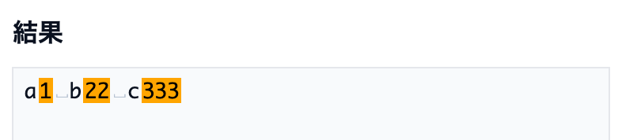
対象テキストのうち、正規表現にマッチした部分がオレンジで表示されます。
使用例
\d+→a1 b22
置換のハイライト
場所結果（置換の欄にブロックをつないだとき）
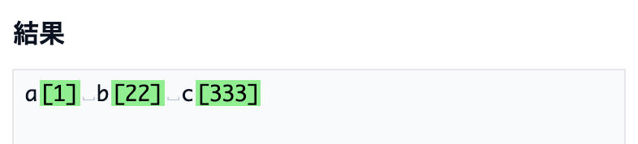
置換した結果が表示され、置き換わった部分が緑で表示されます。
使用例
- 正規表現
\d+、置換[$&]→a[1] b[22]
空白の可視化
場所結果
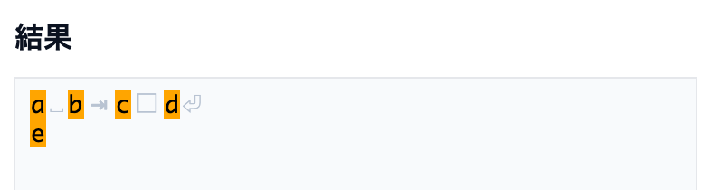
見えない空白の文字が、薄い記号で表示されます。
␣：半角スペース□：全角スペース⇥：タブ⏎：改行
注意
記号は表示のためだけのもので、結果欄をコピーしても入りません（元の空白の文字がコピーされます）。
エラーの表示
場所結果
正規表現として正しくない形（閉じていない ( など）になっているときは、結果欄にエラーの内容が表示されます。
右クリックメニュー
ブロックを右クリック（スマホでは長押し）すると、そのブロックに使える操作のメニューが開きます。 使えない操作は薄く表示されます。
ブロック化・テキスト化
場所ブロックを右クリック → 「ブロック化」「テキスト化」
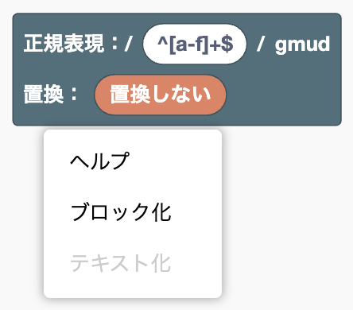
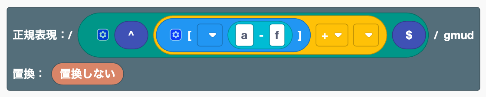
テキストで書いた正規表現とブロックを、相互に変換します。
- ブロック化：文字のブロックや、ルートの正規表現の欄に書いた正規表現を、ブロックの組み合わせに変換します。 ルートを右クリックした場合は、正規表現の欄の中身が対象になります。
- テキスト化：右クリックしたブロックと、その中に入っているブロックをまとめて、1つの文字のブロックに変換します。 ルートの正規表現の欄につながったブロックの場合は、ルートに直接書いた状態に戻ります。
どちらも、Ctrl+Z（Mac では ⌘+Z）1回で元に戻せます。
使用例
- ルートの正規表現の欄に
^[a-f]+$と書いてブロック化 → 行頭・文字クラス・範囲・+・行末のブロックの組み合わせになる
注意
[ ]のブロックの中や、置換の欄にある文字のブロックは、単独ではブロック化できません（[a-f]ごとテキストで書けば変換できます）- テキスト化してからブロック化し直すと、外部入力などの見た目の設定は戻りません
- 対応するブロックがない書き方（
\x41など）は、文字のブロックのまま残ります
N個まとめる・まとめを解除
場所連結・選択・置換の連結の中にあるブロックを右クリック → 「2個まとめる」〜「5個まとめる」「6個以上まとめる…」「まとめを解除」
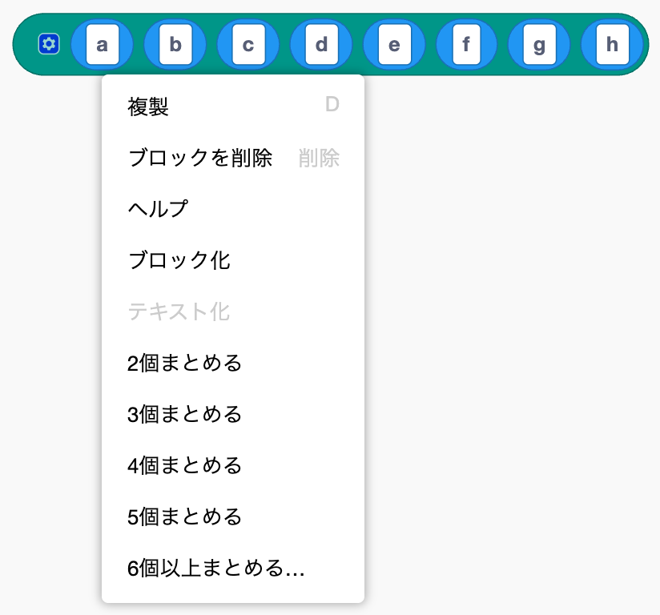
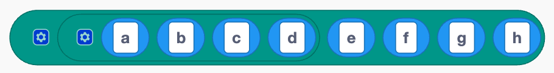
連結のブロックの中身を、ドラッグせずに組み直します。
- N個まとめる：右クリックしたブロックから右に N 個を、同じ種類の新しいブロックの中にまとめます
- 6個以上まとめる…：まとめる個数を入力して、まとめます
- まとめを解除：中に入っている同じ種類のブロックを、外のブロックの同じ位置に展開します
まとめても、作られる正規表現は変わりません。 外部入力・インライン入力と組み合わせると、長く複雑な正規表現を、意味のまとまりごとに整理して見やすくできます。
使用例
- 「a」〜「h」の連結で、a を右クリック → 「4個まとめる」 → 「（a b c d）」「e」「f」「g」「h」になる
注意
文字クラス [ ] の中では使えません（[ ] の中に [ ] を入れると、別の意味になるため）。
外部入力・インライン入力
場所入力欄が複数あるブロックを右クリック → 「外部入力」「インライン入力」

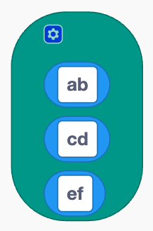
ブロックの入力欄の並べ方を切り替えます。「外部入力」で入力欄が縦に並び、「インライン入力」で横1列に戻ります。 連結や選択の中身が長くなったときに使うと見やすくなります。作られる正規表現は変わりません。
ヘルプ
場所ブロックを右クリック → 「ヘルプ」
ブロック一覧の、そのブロックの説明が開きます。
ブロックの操作
ブロックの基本的な操作は Scratch と同じです。スマホでも、タップとドラッグで同じように操作できます。
基本の操作
場所ワークスペース
- つなぐ：ブロックを、ほかのブロックの入力欄（くぼみ）までドラッグします
- 外す：つながっているブロックを、外へドラッグします
- 削除：ブロックをツールボックスかゴミ箱へドラッグするか、選んで Delete キーを押します
- 複製：右クリック → 「複製」。Ctrl+C / Ctrl+V（Mac では ⌘+C / ⌘+V）でも複製できます
- 取り消す・やり直す：Ctrl+Z / Ctrl+Shift+Z（Mac では ⌘+Z / ⌘+Shift+Z）。ワークスペースの何もないところを右クリックしても選べます
- 整理する：ワークスペースの何もないところを右クリック → 「ブロックを整理する」
- 拡大・縮小：右下の
+-ボタン
入力欄の数を変える
場所歯車のアイコンが付いたブロック（連結・選択・文字クラス・置換の連結）の歯車をクリック
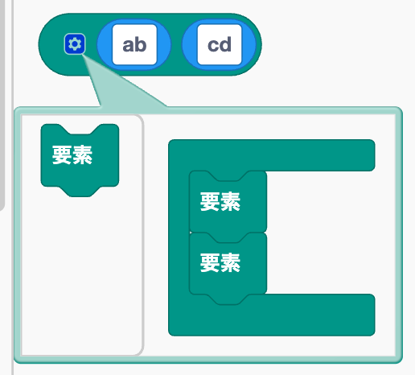
小さな編集画面が開きます。中の「要素」のブロックを足したり外したりすると、入力欄の数が変わります。 「要素」の並びを入れ替えると、入力欄の順番も入れ替わります。
グループ名の作成・変更・削除
場所名前付きグループ・名前付き後方参照・置換の名前付きグループの参照のドロップダウン
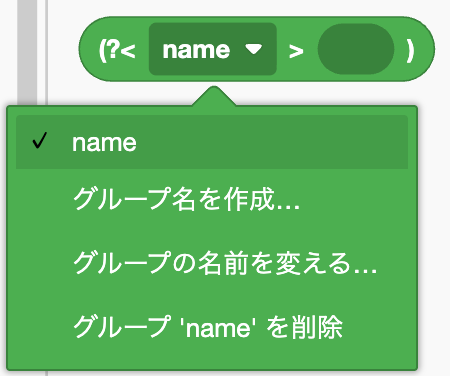
- 作成：「グループ名を作成…」を選び、名前を入力します
- 変更：「グループの名前を変える…」を選びます。同じ名前を使っているブロックの名前もまとめて変わります
- 削除：「グループ '名前' を削除」を選びます。その名前を使っているブロックも削除されます
注意
名前は英字で始まり、英数字と _ だけが使えます。すでにある名前と同じ名前は付けられません。
ファイル
上のメニューの「ファイル」から使います。作った正規表現を、ファイルとして保存したり読み込んだりできます。
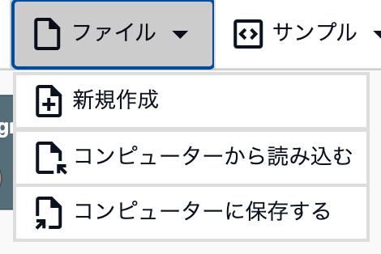
新規作成
場所ファイル → 「新規作成」
ワークスペースと対象テキストを空にして、最初の状態に戻します。
注意
確認なしで消え、Ctrl+Z でも元に戻せません。残したい内容は、先に保存しておきます。
保存
場所ファイル → 「コンピューターに保存する」
ワークスペースのブロックと対象テキストを、regex_workspace.json という JSON ファイルとしてダウンロードします。
読み込み
場所ファイル → 「コンピューターから読み込む」
保存した JSON ファイルを選ぶと、ブロックと対象テキストが保存したときの状態に戻ります。
注意
今のワークスペースの内容は、読み込んだ内容に置き換わります。
サンプル
上のメニューの「サンプル」から、例を読み込めます。読み込んだあとにブロックを変えて、結果がどう変わるか試せます。
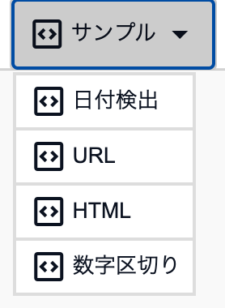
注意
今のワークスペースの内容は、サンプルの内容に置き換わります。
日付検出
場所サンプル → 「日付検出」
2025-08-20 14:21:03 のような日時を、グループで年・月・日・時・分に分けて取り出し、置換で 2025/08/20⇥14:21 の形に並べ替える例です。
URL
場所サンプル → 「URL」
URL からドメインとパスを名前付きグループで取り出し、置換で「ドメイン→パス」の形にする例です。
HTML
場所サンプル → 「HTML」
<.+?> で HTML のタグだけを削除する例です。
+ のブロックの ? を外すと、全部が消えてしまうことを確かめられます（最短一致）。
数字区切り
場所サンプル → 「数字区切り」
後読みと先読みで「数字と数字の間」の位置にマッチして、1340 を 1, 3, 4, 0 のように1文字ずつ区切る例です。
設定
上のメニューの「設定」から使います。
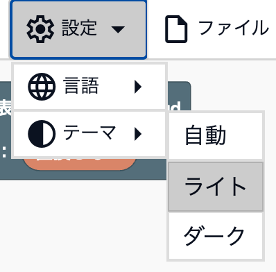
注意
設定は保存されないので、ページを開き直すと元に戻ります。
テーマ
場所設定 → 「テーマ」
- 自動：使っている端末の設定に合わせて、ライトとダークを切り替えます
- ライト：明るい色で表示します
- ダーク：暗い色で表示します
言語
場所設定 → 「言語」
画面とブロックの表示の言語を切り替えます。日本語、English、简体中文、Español、한국어、हिंदी から選べます。 最初はブラウザの言語に合わせて選ばれます（対応していない言語のときは English）。
その他
コピー
場所正規表現パターン・置換文字列の右のボタン
正規表現パターン（/パターン/フラグ の形）や置換文字列を、クリップボードにコピーします。
自分のプログラムに貼り付けて使えます。
対象テキストでのタブ入力
場所対象テキスト
対象テキストの欄で Tab キーを押すと、ほかの欄に移らずに、タブ文字が入力されます。 タブ区切りのデータなどを試すときに使えます。